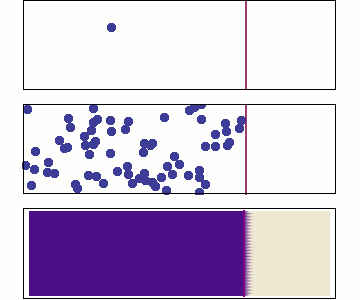

Diffusion: Part 1
- Mass transfer is as ubiquitous as heat transfer in process equipment.
- It is at the heart of catalysed reactions, combustion, distillation, gas absorption/drying, liquid-liquid extraction …
- For example, the growth rate of a bubble in multicomponent boiling is related to the rate at which the volatile component can reach the bubble surface…

- These mass transfer processes are driven by diffusion.
- Diffusion is defined as the process where a single species migrates through a fluid without causing a bulk movement of the liquid.
- What complications does this definition present?
- Consider a container with a movable partition.
- One side of the container is filled with a gas and the other is in vacuum.
- When the partition is removed, what occurs?
- Is this diffusion? Or is this flow driven by a pressure gradient (expansion)?
- It turns out that diffusion in a single component fluid is not traditional diffusion…
- Consider the same container but with two equal-density fluids on either side of the partition.
- When the partition is removed the species mix, is this diffusion?
- The critical definition of diffusion is that it is the migration of a single species through another species/material, without a bulk movement of the fluid occurring.
- The animation on the right shows the random nature of diffusion, and the scaled up effect to realistic numbers of particles.
- At the macroscopic level, we have law's to describe the transport processes…

- You should already be familar with Fick's law, describing the diffusive flux of a species. \begin{align*} N_{A,x} = -D\frac{\partial C_A}{\partial x} \end{align*}
- This is for the diffusive flux, $N_{A,x}$ in mol/m ${}^2$ s, of a species A.
- But is this law correct? Can we find any problems with this definition of Fick's law?
- First, we need to make some statement about the diffusion coefficient, it should be a measure of the diffusibility of species, $A$, through another species, $B$.
- To highlight this we add subscripts to the diffusion coefficient to indicate what is diffusing through what. \begin{align*} N_{A,x} = -D_{AB}\frac{\partial C_A}{\partial x} \end{align*}
- It should be noted that $D_{AB}=D_{BA}$.
-
The value of the diffusion coefficient is relatively quite small
(it has units of m${}^2$ /s).
Substance ( $A$ ) $D_{A,Air}\times10^{6}$ Substance ( $A$ ) $D_{A,Air}\times10^{6}$ Ammonia 28.0 Carbon Dioxide 16.4 Hydrogen 71.0 Oxygen 20.6 Water 25.6 Methanol 15.9 Typical values of the diffusion coefficient of a gas/vapour in air at STP, taken from C&R Vol. 1, Table. 10.2. - When talking about large bodies of convecting/flowing fluids, the measured diffusion is usually much higher than this value.
- This is because small eddies or circulating currents enhance the diffusion through mixing.
- This is usually accounted for by adding an additional diffusivity, called the eddy diffusivity, to account for this effect (but we often ignore this effect in simple calculations). \begin{align*} N_{A,x} = -\left(D_{AB}+E_D\right)\frac{\partial C_A}{\partial x} \end{align*}
- There is still one more problem with this form of Fick's law, and it's a big one.
- It's to do with the diffusion being proportional to the concentration gradient. \begin{align*} N_{A,x} = -D_{AB}\frac{\partial C_A}{\partial x} \end{align*}
- What problems are there with this definition?
- Consider the oil and water system, why aren't they mixing or diffusing?
- But there is a huge concentration gradient at the interface between the two fluids, this version of Fick's law says they must diffuse…
- Now consider if the oil initially contains a small amount of dissolved salt.
- Over time, the salt will migrate into the water, and will remain there at a higher concentration than in the oil phase.
- Such a process is called liquid-liquid extraction, and is used to strip components out of immiscible fluids.
- Here again it appears that the concentration gradient is ignored and that Fick's law is broken…
- The problem is that Fick's law should actually be expressed in terms of the chemical potential, $\mu_A$. \begin{align*} N_{A,x} = -\frac{C_A D_{AB}}{R T}\frac{\partial \mu_A}{\partial x} \end{align*}
- This is known as Maxwell-Stefan diffusion.
- However, in the case that the temperature and pressure of the system are uniform, and we have an ideal mixture we have \begin{align*} \frac{\partial \mu_A}{\partial x} = \frac{R T}{C_A}\frac{\partial C_A}{\partial x} \end{align*}
- If this is used in the Maxwell-Stefan equation above, we recover Fick's law again. \begin{align*} N_{A,x} = -D_{AB}\frac{\partial C_A}{\partial x} \end{align*} But only in the limit of ideal mixtures, and salt-oil-water systems are far from ideal.
- If we want to deal with systems more complicated than a flat plate, we need to consider the a mass balance equation for a single species, $A$.
- We already have one mass balance, called the continuity equation \begin{align*} \frac{\partial \rho}{\partial t} + \nabla \cdot \rho \boldsymbol{v} = 0 \end{align*} but this expression is for all species, not just species $A$.
- Taking the general balance equation, $ \frac{\partial c_B}{\partial t} = -\nabla\cdot \boldsymbol{J}_B + \sigma_B $ we can immediately generate the balance equation for a species $A$ \begin{align*} \frac{\partial C_A}{\partial t} = -\nabla\cdot \boldsymbol{N}_A + \sigma_A \end{align*} where $C_A$ is the molar concentration, $\boldsymbol{N}_A$ is the total molar flux, and $\sigma_A$ is the molar generation rate of A.
- At steady state and neglecting any chemical reaction or absorption we have \begin{align*} \nabla\cdot \boldsymbol{N}_A = 0 \end{align*}
- In the case that the concentration of $A$ is small, we can directly use Fick's law for $\boldsymbol{N}_A$. \begin{align*} \boldsymbol{N}_A = -D_{AB}\nabla C_A \end{align*} (We will discuss moving beyond this limit in the second part of the lectures)
- Obviously this definition of $\boldsymbol{N}_A$ ignores the convective flux of the fluid; however, this definition is sufficient to solve Q.1 of the next Tutorial. We will consider cases with larger concentrations and multiple species in the following section on Advanced Diffusion.
-
We have a plate of fused silica (AKA Pyrex) which is used to
contain a pure Helium gas against a vacuum.
- We need to solve for the flux of Helium through the wall to evaluate if this is an effective containment material for Helium.
- Note the jump in $C_{He}$ ! There is a “no-slip” condition on the chemical potential, but this is a discontinuity in the concentration. You will need thermodynamics to fix this, but this course will simply give you the surface concentrations.
- Starting with the balance equation for Helium gas, we have: \begin{align*} \frac{\partial C_{He}}{\partial t} = -\nabla\cdot \boldsymbol{N}_{He} + \cancelto{0}{\sigma_{He}} \end{align*}
- Assuming we're at steady state, and that we only expect a flux in one dimension, this reduces to: \begin{align*} \nabla_x N_{He,x} &= \frac{\partial N_{He,x}}{\partial x} = 0\\ N_{He,x} &= C \end{align*}
- The flux of Helium through the wall is constant! (this should all be very familiar from heat transfer).
- But what is the absolute flux of hydrogen? As there is probably very little Helium in the solid phase, we directly use Fick's law: \begin{align*} \boldsymbol{N}_{He} &= -D_{He,FS}\nabla C_{He}\\ N_{He,x} &= -D_{He,FS}\frac{\partial C_{He}}{\partial x} \end{align*}
- As the flux is constant, we know that the gradient of the concentration is constant. This means we can work out its value from the boundary values: \begin{align*} \frac{\partial C_{He}}{\partial x} = \frac{C_{He}(x_1) - C_{He}(x_2)}{x_1 - x_2} \end{align*}
- This should look “like” a linear temperature profile to you…
- If we have a fused sillica plate of thickness $10^{-5}$ m, and the concentration in the plate drops from 0.1325 mol/m ${}^3$ on the inside to approximately zero (due to the vacuum) on the external, we have: \begin{align*} \frac{\partial C_{He}}{\partial x} = \frac{0.1325}{10^{-5}} = 13250 \text{mol/m${}^4$} \end{align*}
- The diffusion constant of Helium through fused sillica is $D_{He,FS}=2\times10^{-12}$ m ${}^2$ /s, thus the flux is \begin{align*} N_{He,x} &= -D_{He,FS}\frac{\partial C_{He}}{\partial x}\\ &=2\times10^{-12} \times 13250 \\ &=2.65\times10^{-8} \text{mol/m${}^2$ s} \end{align*}
- A diffusion of $2.65\times10^{-8}$ mol/m ${}^2$ s of Helium (or $1.06\times10^{-7}$ g/m ${}^2$ s), although it sounds low, is actually quite high!
- Pyrex is relatively permeable to Helium, compared to other gases.
- Obviously, this sort of diffusion has relatively limited application (as diffusion through solids is not as great as diffusion through gases or liquids) but we could possibly separate gases if they diffuse at different rates.
- To study other systems which might be more interesting, we need to generalise our definition of the flux…
Learning Objectives
- We have rediscovered Fick's law, and defined the diffusion coefficient $D_{AB}$ and the eddy diffusivity $E_D$.
- Diffusion is only well defined in systems with two components (species $A$ must diffuse through species $B$ and vice-versa).
- We have seen the Maxwell-Stefan equation, and know that diffusion is actually in response to a gradient in the chemical potential.
- This imposes the constraint that to use Fick's law, we must assume the temperature and pressure are constant and that we have an ideal mixture.
- We have set up the balance equation for a single species. \begin{align*} \frac{\partial C_A}{\partial t} = -\nabla\cdot \boldsymbol{N}_A + \sigma_A \end{align*}
- We have been told that, in the limit of small concentrations of $A$, we have \begin{align*} \boldsymbol{N}_{A} &= -D_{AB} \nabla C_{A}\\ \end{align*}